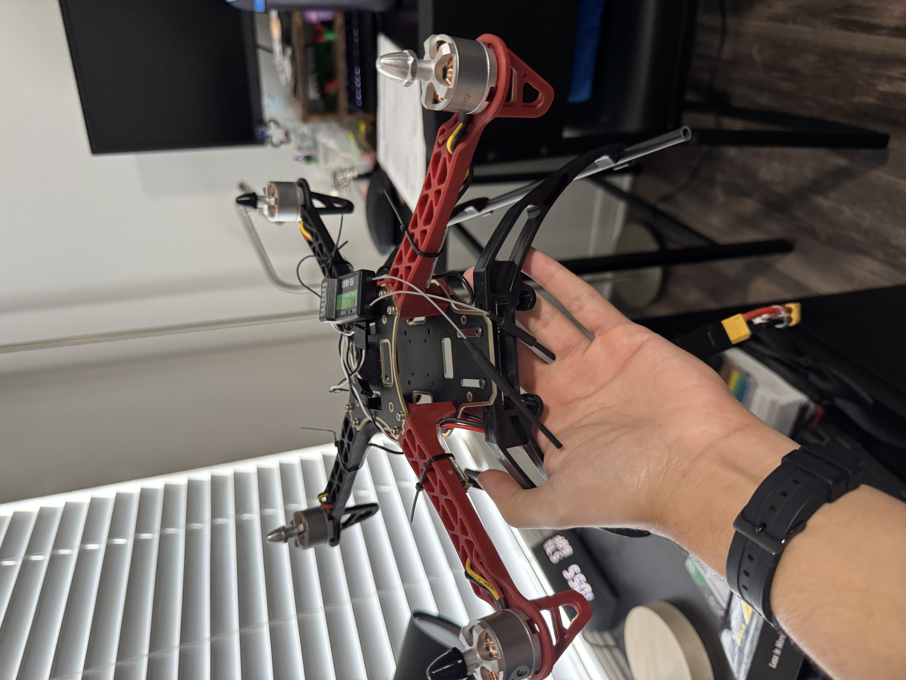

Project Icarus
Building a PX4-based quadcopter to study flight control and autonomy. Integrated ESCs, power distribution, and Pixhawk flight controller; developing MAVSDK scripts for autonomous takeoff, hover, landing, and telemetry logging;